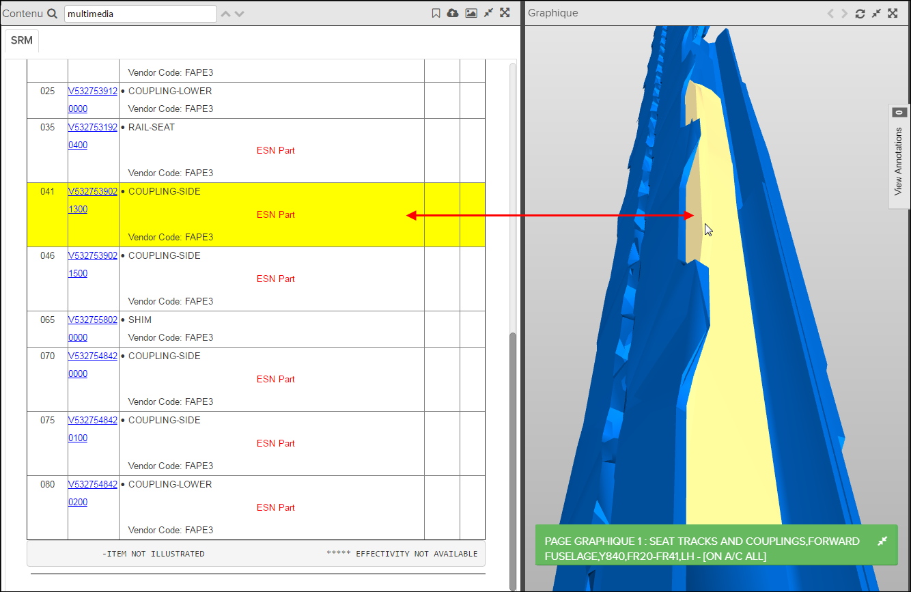

Pinpoint prend en charge le rendu des graphique 3D SIMIC/VRML dans la fenêtre.
Remarque : Dans l’A350, il existe un ensemble de données SIMIC complémentaire qui complète
l’A350 SRM existant. Il prend en charge l’affichage de l’image de la structure de
l’avion en tant qu’arrière-plan de l’image 3D Partie SRM.
Graphique.
Remarque : CORTONA 3D Viewer pour le navigateur Web doit être installé sur le Pinpoint client
station pour l'affichage des graphique SIMIC/VRML. Notez que cela ne soit pas
nécessaire si vous utilisez Internet Explorer et Chrome.
Les étapes ci-dessous décrivent la procédure d'ouverture et d'utilisation du clavier
et de la souris pour faire pivoter, déplacer et zoomer le graphique
SIMIC/VRML.
Remarque : Les fonctionnalités disponibles pour les graphiques 3D
dépendent de la construction des données et des configurations.
-
Si le graphique inclut des liens hot spot, et l'application a été configuré
pour gérer , vous aurez des fonctions de navigation supplémentaires dans la
fenêtre Contenu et Graphique:
- Passez la souris sur l'image et obtenir des informations dans le cadre
des fenêtres pop-up:

- Cliquez sur un hotspot dans le graphique 3D pour mettre en surbrillance
l'élément correspondant dans la liste des pièces dans la fenêtre
Contenu:

-
Cliquez sur un élément dans la fenêtre Contenu pour mettre en évidence l'objet dans le graphique 3D.
-
Cliquez une fois sur le même article pour zoomer sur l'objet.
Conseil : Dans certains cas, vous devrez faire pivoter l'objet 3D afin de voir les pièces mises en évidence.Remarque : La fonctionnalité hotspot nécessite un logiciel de conversion supplémentaire et sa configuration. Pour plus d'informations, merci de référer à Flatirons Pinpoint Configuration Guide.
- Passez la souris sur l'image et obtenir des informations dans le cadre
des fenêtres pop-up: